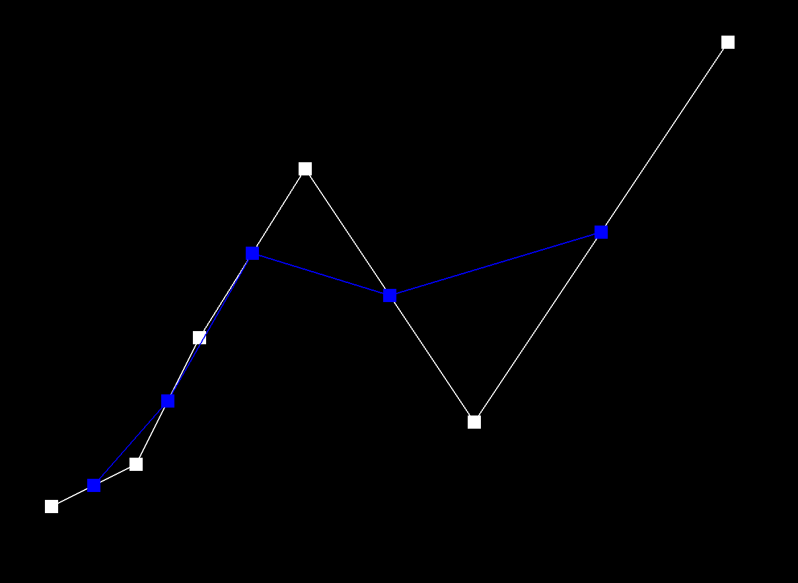
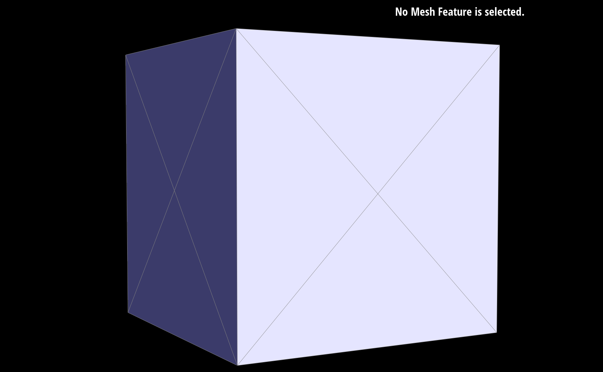

Brayton Lordianto and Max Wilcoxson (Team Vis10nPro)
Webpage URL: https://brayton-lordianto.github.io/Computer-Graphics-Sites/geometry/
In this project, we explore Bezier Curves and Surfaces, and Triangle Meshes with the Half-Edge Data Structure, ending with Loop Subdivision. The first section delves into the mathematical foundations and practical applications of Bezier curves and surfaces, including the implementation of De Casteljau's algorithm. The second section focuses on the manipulation and refinement of triangle meshes using the half-edge data structure and C++ iterators, covering essential operations such as area-weighted normals, edge flips, and edge splits. The project culminates in the implementation of Loop Subdivision for mesh upsampling to achieve smooth and detailed 3D models. The expected result of the second part is to end up with loop subdivided meshes as shown below:
A bezier curve is a parametric curve that is defined by a set of control points. Given these control points, we can interpolate a curve that is guided by the control points, allowing for smooth curves to be created. Bezier surfaces are an extension of bezier curves, where we can create a surface by interpolating a set of control points. This is extremely useful in computer graphics, as it allows us to create smooth surfaces of meshes defined by a set of control points.
For instance, the following 6 2D control points
0.200 0.350 0.300 0.400 0.375 0.55 0.500 0.750 0.700 0.450 1.000 0.900can be used to create the following bezier curve
The methodology for creating a bezier curve is very simple -- it is just a sequence of linear interpolations between the control points. We can use the De Casteljau's algorithm to calculate the points on the curve. The algorithm first calculates the linear interpolation between each pair of control points, and then calculates the linear interpolation between the resulting points, and so on. Note that this will result in one less resulting point than the inputs it interpolated on. This process is repeated until we have a single point, which is the point on the bezier curve. This is then done for a set of t values we use for linear interpolation that range from 0 to 1. Consider t = 0.5 for the above example, where the new blue points are the linear interpolations after every iteration, and the red point is the resulting point that gets drawn on the curve:
| Iteration 0 | Iteration 1 | Iteration 2 | Iteration 3 | Iteration 4 | Iteration 5 |
|---|---|---|---|---|---|
|  |
This same concept can be extended to bezier surfaces, where we can create a surface by interpolating a set of control points. Instead of a single t parameter, we are dealing with two parameters u and v that range from 0 to 1 where u is the parameter that interpolates between the rows of control points and v interpolates between the columns. The control points are now defined by a control "patch" that creates any bezier surface. The De Casteljau's algorithm can be extended to calculate the points on the surface by first interpolating between the rows of control points, and then interpolating between the resulting points. In other words, we get points that determine bezier curves in u and then interpolate at v along the curve created by the points in u. Below is a visualization of a bezier surface created by a set of control points:
| Bezier Surface Patch | UV De Casteljau's Algorithm |
|---|---|
With a set of control point patches, we can create complex bezier surfaces. For instance, we can create the famous Utah teapot by interpolating a set of control points. Below is a visualization of the Utah teapot created by a set of control points:
A triangle mesh is a collection of vertices, edges, and faces that define a 3D object. There are many representations of triangle meshes, but one of the most common representations is the half-edge data structure, which is the representation we will be using in this project. The half-edge data structure is a data structure that represents a mesh as a set of half-edges, which are directed edges that represent the edges of the mesh. Each half-edge has a pointer to its twin half-edge, which is the half-edge that is the reverse of the current half-edge. This allows us to easily traverse the mesh and access the vertices, edges, and faces of the mesh. More specifically, we use FaceIters, EdgeIters, VertexIters, and other iterators in C++ to traverse over mesh elements. A visualization of the half-edge data structure is shown below:
| Each half-edge is associated with the face where the half-edge points along the counterclockwise (CCW) direction on the face. The half-edge data structure is designed such that each half-edge has pointers to (1) the opposite half-edge, called its twin, (2) the next half-edge CCW around the face associated with the half-edge, and (3) the vertex that is the "source" of the half-edge, (4) its associated edge, and (5) its associated face as explained above. In contrast, each primitive mesh element (a vertex, edge, and face) only has a pointer to one of their half-edges. In more detail, (1) a vertex only has a pointer to one of the half-edges that points away from the vertex, (2) an edge only has a pointer to one of its two half-edges, and (3) a face only has a pointer to one of the half-edges circulating around its interior. |
One of the most important operations we can perform on a triangle mesh is to calculate the normals of the vertices. The normals of the vertices are important for shading and rendering the mesh, as they determine how light interacts with the surface of the mesh. To implement the area weighted normals given a triangle mesh's vertex positions and face topology in the half-edge data structure, we can calculate the normals. Consider a triangle ABC. Notice that the unit normal of the triangle is given by the normalized cross product of the vectors AB and AC because the cross product of two vectors gives a vector that is orthogonal to the plane defined by the two vectors. Furthermore, the area of the triangle is simply the magnitude of the cross product of the vectors AB and AC divided by 2, since the magnitude of the cross product of two vectors gives the area of the parallelogram defined by the two vectors.
To calculate the normal of a vertex V, we can sum the normals of the triangles that share the vertex V and average them based on the area of each triangle face. Therefore, the only procedure we need to implement is to explore all the faces that share the vertex V, summing the cross product of the vectors AB and AC (where A is the vertex V and B and C are the vertices of the face), and simply dividing by the sum's magnitude to get the area weighted normal of the vertex V. This works because the area of the triangle is already proportional to the magnitude of the cross product of the vectors AB and AC, while the directions of the normals are also gotten from the cross product.
These normals can then be used with Phong shading (will not discuss in detail in this project) to calculate smooth shading on the mesh. Note that the illustrations are not the same as the ones in the Bezier section as they are created with triangles instead of bezier patches:
| Without Area Weighted Normals (Flat Shading) | With Area Weighted Normals (Smooth Shading) |
|---|---|
Getting into the concept of remeshing, the overarching goal is to be able to manipulate our mesh in various ways and eventually leading to subdivision and non-optimization based mesh smoothing. A simple first step in this direction is the edge flip operation. The edge flip operation is a simple operation that flips an edge in the mesh. This operation is useful for improving the quality of the mesh by reducing the number of obtuse angles in the mesh. In code, it is fairly straightforward. For every edge, we will reassign all the members pointed to by halfedges, and then vertices, and then faces. When drawn on paper, it becomes pretty clear who to reassign to what
| Edge Flip Operation | Visualization |
|---|---|
We simply reassign h and h_t to have different next halfedges with different outgoing vertices, and then we reassign the other 4 halfedges to account for potentially being in a different face and having a different next halfedge. The pseudocode for this is extremely similar to what will be shown in the Edge Split section. We then reassign the vertices and faces to account for the new edge. Here is an example of the edge flip operation in action:
| Before Edge Flip | After Edge Flip |
|---|---|
The next important operation for remeshing is the edge split operation. The edge split operation is an operation that splits an edge in the mesh. Note that this actually creates a new vertex in the middle of the edge, and then creates two new faces that connect the new vertex to the two endpoints of the edge. This means that the mesh's resolution will increase. However, this only changes the topology of faces and does not change the positions of existing vertices or add vertices in positions that were not already in the surface of the mesh. In code, this is also just as straightforward as the edge flip operation, but it is way more convoluted in terms of the number of halfedges and vertices that need to be reassigned.
We use the same method as with edge flips. Consider the same triangle ABC and that we are splitting on edge BC to create a midpoint vertex M, which we just set to the midpoint of vertex B and C. Instead of the 6 half edges we had to reassign in the edge flip operation, we now have to reassign all 12 half edges. By looking at the diagram, we have a clear idea of what to reassign to what. The pseudocode depicting reassignment of each halfedge's members for this operation is as follows:
MC: Next is still CA, twin is same, vertex is now M, edge/face unchanged
CM: Next is now MD, twin is the same, vertex is still C, edge/face unchanged
CA: Next is AM, vertex is still C, everything else stays the same
AB: Next is now BM, vertex is still A, face is now MAB
BD: Next is now DM, vertex is still B, face is now MBD
DC: Next is CM, vertex is still D, face is still BDC
AM: Next is MC, vertex is A, Edge is AM/MA, face is ABC
MA: Next is AB, vertex is M, Edge is MA/AM, face is MAB
BM: Next is MA, vertex is B, Edge is BM/MB, face is MAB
MB: Next is BD, vertex is M, Edge is BM/MB, face is MBD
DM: Next is MB, vertex is D, Edge is DM/MB, face is MBD
MD: Next is DC, vertex is M, Edge is DM/MB, face is BDCWe then reassign for the vertices, faces, and edges to point back to the correct halfedges that are now pointing to them. We will also mark the vertex m and new edges as new elements (for bookkeeping purposes). Here is an example of the edge split operation in action:
| Before Edge Split | After Edge Split | Edge Split + Edge Flip |
|---|---|---|
Mixing it with edge flip can cause some interesting results that end up in more complex shapes, even when starting from something simple like a minimal cube triangle mesh.
The final operation is the loop subdivision operation, which uses the edge flip and edge split operations to upsample the mesh. The loop subdivision operation is an operation that subdivides the mesh by splitting each edge in the mesh and then smoothing the mesh by averaging the positions of the vertices. This operation is useful for increasing the resolution of the mesh and creating a smoother mesh.
The loop subdivision operation has basically two steps:
| Single Triangle Subdivision | Multiple Triangle Subdivision |
|---|---|
The straightforward solution is to first perform subdivision and then update the vertices. However, we can use a more efficient approach. Our implementation first calculates the old vertex's updated positions and sets them to the vertex's newPosition, and then we calculate future new vertex's positions and sets them to the newPosition of the edge in which the new vertex is the midpoint. We then perform the edge split-flip operation (4-1 subdivision) to get the new vertices and edges. When we split an edge, we simply set the new midpoint vertex to be set to the edge's stored newPostion. Finally, we update all the old vertices' positions to the new positions. This method is easier and more efficient as it iterates over a coarse mesh rather than a finer mesh.
To gain newPosition of old vertices, we loop over each old vertex, and perform simple half edge manipulation to get the neighboring vertices. We then calculate the new position of the vertex by following the rule of the Loop subdivision algorithm. For the positions of new vertices, we loop over each edge, then we extract the four vertices that are associated with the edge as in the image since our edge has access to halfedges. We then calculate the new position of the vertex by following the rule of the Loop subdivision algorithm for new vertices.
For the split flip operation, we iterate over all edges and check that the vertices associated with the edge are old. If so, we perform the edge split operation. We then perform the edge flip on new edges where one vertex is new and the other is old. We can easily do this because the edges and vertices all have an isNew boolean that we can check, which is set when we perform the edge split operation.
Since we have our own custom flip operation that sets the new vertices to a different position, we have created a subroutine of flipping which takes a parameter of whether we are performing loop subdivision. If so, it will set the new vertices to the stored newPosition of the edge, or otherwise it will set the new vertices to the midpoint of the edge as before.
Here are some results of the loop subdivision operation in action over multiple iterations of upsampling:
| Before Loop Subdivision | After 1 Iteration | After 2 Iterations | After 3 Iterations |
|---|---|---|---|
Notice that the mesh becomes smoother and more detailed as we increase the number of iterations of the loop subdivision operation. While this can be a desired effect, it can also be undesirable that the sharp features (like the corners of the cube) are becoming less defined over iterations. This is a common problem with loop subdivision, and we can perform pre-splitting of edges to preserve sharp features.
Note also that the cube mesh for example becomes asymmetrical after the first few iterations, most likely because of the fact that not all edges are symmetric in the cube. We can also perform pre-processing with edge flipos or splits to reduce this asymmetry.
For instance, we can split the edges of the cube before performing loop subdivision to preserve the sharp features and maintain symmetry of the cube (in side angle):
| Before Loop Subdivision (after splitting) | After 1 Iteration with Pre-Splitting | After 2 Iterations with Pre-Splitting | After 3 Iterations with Pre-Splitting |
|---|---|---|---|
|  |
In this project, we explored Bezier curves and surfaces, triangle meshes with the half-edge data structure, and loop subdivision for mesh upsampling. We implemented De Casteljau's algorithm for Bezier curves and surfaces, area-weighted normals for triangle meshes, and the edge flip, edge split, and loop subdivision operations for triangle meshes. We also discussed the mathematical foundations and practical applications of these concepts, and provided visualizations of the results of these operations.